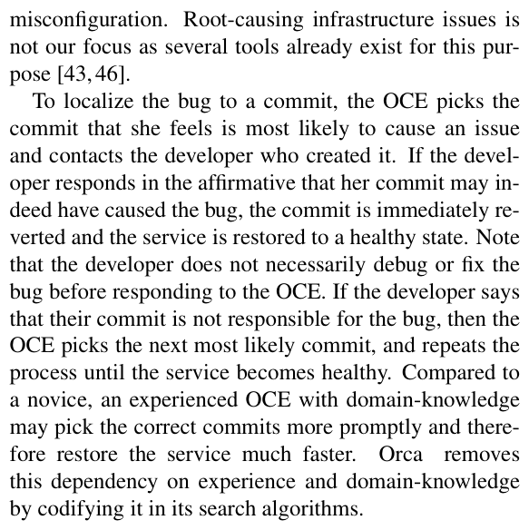
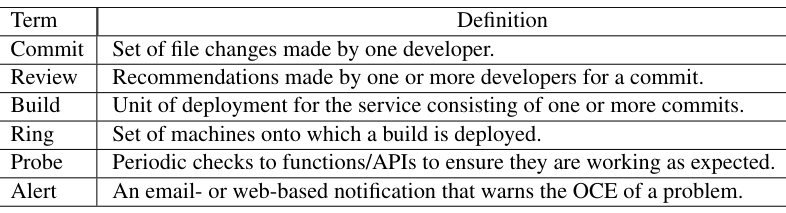
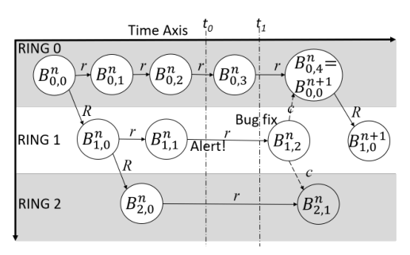
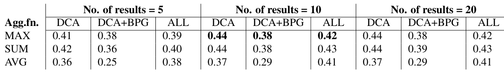
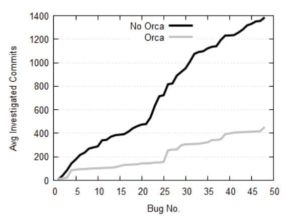
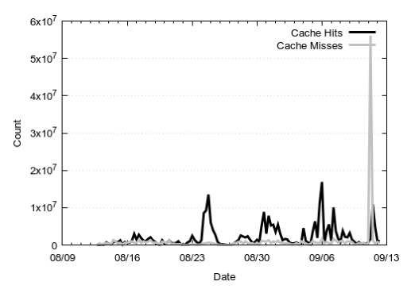

Orca: Differential Bug Localization in Large-Scale Services
This page was written by an AI model to give a high-level overview of the paper. Please check the paper for detail: USENIX.
"Orion," the paper's pseudonym for a large enterprise email and collaboration service, runs across hundreds of thousands of machines and serves millions of requests per second, with thousands of developers committing hundreds of changes a day and new builds deploying weekly. About half of Orion's service disruptions are caused by software bugs. When a monitoring probe flags a build as unhealthy, an On-Call Engineer (OCE) must find the responsible commit fast, because the standard remedy is to revert the buggy commit immediately rather than wait for a fix. The hard part is that a single build can bundle anywhere from a handful to hundreds of commits (one bug in the study appeared in a 201-commit build), and the OCE has no principled way to narrow that list beyond personal experience and manually asking developers one by one whether their commit is at fault.
Existing automated techniques do not fit this setting. Information-retrieval bug-localization tools match a bug report against a corpus of past bug reports and point to a file, not a commit, and they assume the current and prior versions of the system are similar; Orion's module dependencies change 1 to 3% every month and some files change more than once a day, so that assumption does not hold. Statistical and delta-debugging techniques need many instrumented test runs, which is too intrusive and slow for a live, non-reproducible production bug. Semantic differential static analysis (such as SymDiff) requires enumerating correctness properties in advance, which is intractable across a service with this many interacting components.
The authors' key observation, from an eight-month study of real post-deployment bugs, is that the vocabulary of a bug's symptom (a probe name, an exception message, a customer complaint) tends to overlap with the vocabulary of the code that caused it: a complaint about "People Suggestion" traced to a function containing the word suggest; an exception about a data type traced to a commit that added that type. This motivates differential bug localization: treat the symptom text as a search query, but search only the code that a commit actually changed, using a syntactic (abstract-syntax-tree-level) diff rather than whole files or raw text. Because a bug can surface in a build well after the commit that caused it was deployed in an older build, the authors add a second construct, the build provenance graph (BPG), which tracks how builds fork and get promoted across deployment rings and over time, letting the search walk back to older, ancestor builds. A learned commit-risk model then breaks ties among equally-relevant commits.
Orca, the resulting tool, turns a symptom into a ranked list of suspect commits in four steps: it tokenizes the query and weights tokens by rarity across Orion's historical alert corpus; it walks the BPG backward from the symptomatic build to find all builds (and their commits) that could be responsible; for each candidate commit it scores file-token matches against the commit's AST difference set and aggregates them into one commit-level relevance score; and it sorts commits by that score, breaking ties with the commit-risk model, before showing results in a web UI, a PowerShell cmdlet, or an API callable from the alerting pipeline.
Evaluated on 48 manually reconstructed post-deployment bugs from Orion (out of 4,400 real invocations since October 2017), Orca correctly localizes 37 of 48 bugs (77% recall), with 30 of those 37 in the top 5 results, and its use cuts the median number of commits an OCE must manually inspect from 22.75 to 3.5, a 6.5x reduction, and the mean from 28.9 to 9.4, a 3x (67%) reduction. Orca has since been deployed on six large-scale services inside the organization.

Key takeaways
- Orca treats a bug's symptom text as a search query over the changes a commit makes, not the whole file, using AST-level differential code analysis (DCA) rather than full-file or purely lexical search.
- A build provenance graph (BPG) tracks how builds fork across deployment rings and across time (inter-ring, intra-ring, and backport edges), letting Orca walk back to a build's Ring-0 origin to find older commits whose bugs only surface later.
- A regression-tree commit-risk model, trained on about 93,000 historical commits, breaks ties among equally relevant commits by ranking riskier ones first.
- On 48 real Orion bugs, DCA alone reaches 69% recall; adding the BPG raises it to 77% (37/48), though at a cost to ranking quality (MRR) that the risk model partly restores.
- Using Orca cuts the commits an OCE must manually inspect by 3x on average (6.5x at the median), with results returned in an average of 5.97 seconds per query.
From a symptom to a ranked list of suspect commits
Orion's development pipeline, what the bug study found, differential code analysis, the build provenance graph, commit risk, the search algorithm, and the implementation.
1 · Orion's development and deployment pipeline
Developers commit code, which one or more chosen reviewers comment on through several iterations, and which then passes unit, integration and functional tests. Periodically, an administrator combines a set of tested commits into a build, the unit of deployment. Builds roll out in stages onto "rings," predetermined sets of machines: first to the smallest ring, Ring 0 (a few thousand machines), then progressively to Ring 1, Ring 2 and beyond, as the build proves stable. Once deployed, probes passively or actively monitor each ring and raise alerts through anomaly detection. If only machines running one specific build raise alerts, the OCE concludes that build is buggy and starts bug localization: she picks the commit she judges most likely responsible, asks its developer to confirm, and if the developer agrees the commit is reverted immediately. The developer does not need to have fixed, or even fully understood, the bug yet; restoring health comes first, debugging comes later.

2 · What an eight-month study of real bugs found
Studying post-deployment bugs and the commits that caused them, the authors found they fall mostly into four categories: bugs specific to certain environments or client types that tests don't cover (a web-only synchronization failure); bugs from uncaptured dependencies, where a change to one component silently breaks another that depends on it (a client sends a data type the server was never updated to support); bugs that introduce performance overhead that only appears under real load (a non-thread-safe dictionary access that only blows up CPU usage at scale); and user-interface bugs surfaced by customer complaints. Two measurements shaped Orca's design: a commit changes, on average, only about 20 lines of source per file, far less than the hundreds of lines a whole file can contain, and the buggy build's commit count can run into the hundreds, so brute-force manual review does not scale.
3 · Differential Code Analysis (DCA)
Orca compares the abstract syntax trees (ASTs) of a file's old and new versions and extracts a "difference set" D of entities that were added, removed, or changed, where entities are classes, methods, references, conditions, and loops. For every changed entity, D also stores the literal old and new text of the changed lines (ddiff). Critically, D includes the name of a changed method or class even when the name itself was not edited, which matters because a symptom term can match a structural name (a changed function called MigrateMailbox) rather than any literal line of the diff text. A purely lexical diff of the changed text alone would miss that match.
The authors deliberately avoid two alternatives: a full semantic differential analysis (as in SymDiff), which is property-driven and requires enumerating correctness properties that cannot be fully listed for a large, dynamic service; and plain text search over diffs, which misses structural-name matches as above. DCA's syntactic approach is not sound: a function whose name changes completely while its body stays the same is treated as an entirely new function, inflating the difference set. The authors accept this precision cost because it guarantees every real change is captured, favoring recall.
4 · The Build Provenance Graph: construction

A build is written as Bir,v, where i is a build identifier, r a ring, and v a version within that ring. Three edge types connect builds over time:
- Inter-ring edges. When a build is stable in ring r, it forks to the next ring r+1. At most one inter-ring edge exists between two consecutive rings for a given build identifier.
- Intra-ring edges. Fresh commits inside the same ring create the next version of that ring's build; most of these edges occur in Ring 0, the most experimental ring.
- Backport edges. If a critical bug, once localized, is fixed by a new commit in one build, that fix is applied ("back-ported") to the currently active builds in other rings descended from the same origin, creating a dashed backport edge labeled with the fix commit.
Every build has exactly one incoming inter-ring or intra-ring edge (backports aside), so there is a single path from any build back to its origin build, Bi0,0. As Ring 0 accumulates enough new commits, a later Ring-0 build is promoted to become the next origin build, Bi+10,0, and subsequent builds derive from it.
5 · The Build Provenance Graph: traversal
Given a symptomatic build Bip,q, Orca walks the single inter-ring/intra-ring path backward to the origin build Bi0,0, collecting the commits of every build along that path, plus any commits back-ported onto builds on the same path. For example, if an alert fires in Bn2,1, backtracking yields the commits of Bn2,1, Bn2,0, Bn1,0 and Bn0,0, plus a back-ported commit c if one was applied along that path. This candidate set is what DCA then searches over, letting Orca reach bugs introduced many builds earlier than the one where the symptom finally appeared.
6 · Commit risk prediction
Because several commits near the same time can match the query's terms equally well, Orca needs a tie-breaker. The authors train a regression-tree model (the FastTree algorithm in ML.NET) on about 93,000 historical commits collected over two years, each labeled "risky" if it caused a deployed bug and "safe" otherwise. Four feature categories feed the model:
- Developer experience , newer developers to the organization or codebase correlate with more post-deployment bugs.
- Code ownership , files touched mostly by a single developer saw fewer bugs than files touched by many.
- Code hotspots , certain code paths are historically more bug-prone when touched.
- Commit complexity , file types changed, number of lines changed, and number of reviewer comments.
The model outputs a risk value between 0 and 1, used only as a secondary sort key: Orca ranks by term relevance first, and uses commit risk only to order commits that tie on relevance.
7 · The search algorithm, end to end
- Query preprocessing. A custom code tokenizer splits symptom text (probe names, exception text, log messages, complaints) along Camel- and Pascal-case boundaries and also generates bigrams (
ImapTransfer,mailboxSync), then strips stopwords learned from Orion's log structure (such as the suffixExceptionor timestamps). Each surviving token t gets an Inverse Query Frequency (IQF) score, tIQF = (number of historical queries) / (number of those queries containing t), computed from about 8 million historical alerts; rarer tokens score higher. - Build graph traversal. Orca walks the BPG from the symptomatic build to its origin (Section 5), producing the candidate set of commits to search.
- Token matching via DCA. For each candidate commit C, each file f it touched, and each query token t, Orca computes a TF-IQF relevance RCT = n · tIQF, where n is how many times t appears in f's difference set. File-level scores are then aggregated to one commit-level score RC using an aggregation function Θ over all (file, token) tuples; MAX, SUM and AVG were all tested (Evaluation tab).
- Ranking and visualization. Commits are sorted by RC in decreasing order; ties are broken using the commit-risk score from Section 6, and the ranked list is shown to the OCE.
LdapAuthProbe throws AuthFailedException. After stripping stopwords Failed and Exception, the surviving tokens are Ldap, Auth and Probe. Probe occurs in almost every symptom and gets a low IQF; Ldap, being specific, gets the highest. A commit that modified a class LdapService and its method LdapRequestHandler matches Ldap twice and outranks a commit that only touched an unrelated Imap file.How well this pipeline actually localizes real bugs, and what each piece contributes, is covered in the Evaluation tab.
8 · Implementation
Orca is implemented in roughly 50,000 lines of C# (.NET Framework 4.5) and SQL. Data loaders pull source code and history from source-control systems (GIT and internal systems), build metadata from big-data logging systems (feeding BPG construction), machine and deployment state, and alerts from multiple existing alert sources, all normalized into one central SQL database so that every analysis works the same way regardless of data source. Background jobs recompute DCA and BPG construction hourly, commit-risk prediction daily, and IQF weekly. The API serves requests synchronously and returns JSON; a Redis cache sits in front of relatively static data (builds, files, source, difference sets, the BPG) to speed up lookups. OCEs interact through a web UI or a PowerShell cmdlet, and alerting systems can call the API directly to attach suspect commits to an alert automatically. Orca runs on Azure (PaaS and IaaS) and, beyond Orion, has been deployed on five other large-scale services, each wired to its own combination of data loaders feeding the same core engine.
Evaluation
Result quality, the value of the build provenance graph, OCE workload reduction, and system performance.
Orca has been invoked 4,400 times on Orion since its October 2017 deployment, but Orion keeps no central log of root-cause commits, so the authors manually reconstructed ground truth (full symptom plus verified buggy commit) for 48 bugs through interviews with OCEs and manual analysis of source code, bug reports, and email threads. These 48 bugs range from single-line changes to bugs caused by complex cross-component dependencies.
| What | Value in the paper |
|---|---|
| Platform | 32-core, 2 GHz Intel Xeon E7-4820 CPU, 64 GB memory |
| Workloads | 48 manually reconstructed post-deployment bugs from Orion since October 2017 (out of 4,400 real Orca invocations) |
| Configurations compared | DCA alone; DCA with the build provenance graph (DCA+BPG); DCA+BPG with commit-risk ranking (ALL) |
| Baseline | Manual OCE investigation without Orca, estimated at c/2 commits inspected for a build of c commits |
| Metrics | Recall, Mean Reciprocal Rank (MRR), number of commits investigated, query response time, Redis cache hit/miss ratio |
DCA alone finds most bugs; the build provenance graph adds the hardest remaining ones, at a small ranking cost that commit risk partly restores

What it shows. Table 3 reports recall (the fraction of the 48 bugs where the correct commit appears anywhere in the result list, with the count of correctly localized bugs in parentheses) for three configurations (DCA, DCA+BPG, ALL), three aggregation functions (MAX, SUM, AVG), and three result-list sizes (5, 10, 20). At 10 results with MAX aggregation, DCA alone localizes 33/48 bugs (recall 0.69); adding the BPG raises this to 37/48 (0.77); adding commit risk leaves recall at 37/48, since risk reorders results rather than changing which bugs are found. MAX and SUM aggregation beat AVG at every list size tested. A companion table (Table 4, not reproduced here) reports Mean Reciprocal Rank for the same configurations: at 10 results with MAX, DCA alone scores MRR 0.44, DCA+BPG drops to 0.38 because the larger search space introduces more false-positive term matches, and adding commit risk restores MRR to 0.42. Of the 37 correctly localized bugs, the matching term was a component name in 14 cases, the function performed (e.g., "migrat," "suggest") in 17, a protocol name (e.g., "Imap") in 4, and a data type in 2. Of the 11 unlocalized bugs, 1 was a pure performance symptom, 4 traced to a configuration change that triggered code committed earlier than the BPG's search window reached, and 6 had symptom terms that did not capture the bug's underlying semantics.
What to take from it. The system settles on MAX aggregation and a 10-result list as the best trade-off the authors tested between recall, ranking quality, and UI succinctness ("OCEs mentioned they would not want to see beyond 10 results"). Term similarity between symptom and cause is versatile enough to catch component-, function-, protocol-, and type-level bugs, but it is not universal: configuration-only bugs and semantically disconnected symptoms are explicitly out of scope for the current design. This is a 48-bug evaluation set the authors themselves hand-labeled after the fact, so it is small and not drawn randomly from all Orion incidents.
The build provenance graph's 4 extra bugs are disproportionately valuable because they are the ones OCEs find hardest
What it shows. The paper singles out the 4 bugs that only DCA+BPG (not DCA alone) localizes correctly. These are bugs whose root-cause commit lived in an older build than the one where the symptom appeared, reached only by walking inter-ring, intra-ring, and backport edges back toward the origin build, as in the worked traversal example in Section 4.2.2 of the paper. For these 4 bugs specifically, an OCE without Orca would have had to inspect an average of 59.4 commits; with Orca, only 1.25 commits on average.
What to take from it. The authors frame the headline 69%-to-77% recall jump as understating the BPG's value: these are exactly the bugs OCEs find most difficult to attribute manually, since finding them requires investigating a much older build, so the 47.5x reduction in commits inspected for this subset is the number that best isolates the BPG's contribution. The result is specific to these 4 cases in a 48-bug sample, not a general claim about all cross-build bugs.
Orca cuts the commits an OCE must manually inspect by roughly 3x on average, 6.5x at the median

What it shows. Figure 5 plots, for all 48 bugs, the cumulative distribution function of the number of commits an OCE is expected to investigate without Orca (c/2 for a build of c commits) versus with Orca (the rank r of the correct commit if found in the top 10, else 10 plus (c-10)/2 in expectation). Without Orca, the median is 22.75 commits and the mean is 28.9. With Orca, the median drops to 3.5 and the mean to 9.4, a 6.5x reduction at the median and a 3x (67%) reduction on average. Restricting to the 37 bugs Orca actually localizes, the average reduction factor rises to 9.7x.
What to take from it. The gap between the median (6.5x) and mean (3x) reduction reflects the 11 unlocalized bugs, for which the OCE still pays close to the full manual cost; the paper's workload claim is strongest when Orca succeeds, and more modest in aggregate once failures are included. This metric (commits inspected) is a proxy for OCE effort, not a direct measurement of wall-clock time saved, which the authors note is harder to measure without long-term OCE shadowing.
Redis caching roughly halves query latency, and query locality keeps the cache effective in production

What it shows. Running all 48 queries in sequence on the 32-core evaluation machine, average query response time falls from 12.4 seconds without Redis to 5.97 seconds with it, a 51.8% reduction. Increasing the degree of parallelism (C#'s MAXDOP parameter) from 32 to 128 also matters substantially: average response time is 30.94 seconds at a parallelism of 32 versus 5.97 seconds at 128. Figure 6 separately tracks Redis hit and miss counts over two months of production use starting August 2018, showing hits outnumbering misses by an average of 2.2x.
What to take from it. Both caching and parallelism contribute meaningfully to keeping Orca interactive (the paper's overall reported average is 5.9 seconds per query), and the 2.2x hit ratio confirms that real OCE queries have temporal locality, likely because successive queries investigate the same build and therefore hit the same difference sets. The paper notes there is still room to push parallelism further to serve more services without added latency, but does not test degrees of parallelism beyond 128.
FAQ
Q·What problem is Orca actually solving?▾
Given an alert that a deployed build is misbehaving, find the specific commit (out of potentially hundreds bundled into that build) that caused it, as fast as possible, so it can be reverted. This is "commit-level bug localization," distinct from fixing the bug, which can happen later.
Q·Why can't existing bug-report search tools be reused here?▾
Information-retrieval bug-localization tools match a new bug report against similar past bug reports and point to a likely file. They assume the codebase is relatively stationary between the current and past versions being compared. Orion's module dependencies change 1 to 3% every month and many files change more than once a day, so that stationarity assumption does not hold, and file-level results are not precise enough for a revert decision anyway.
Q·Why not just diff whole files, or just match on file names?▾
Whole-file search surfaces false matches because, on average, a commit only changes about 20 lines of a file that may contain hundreds. File-name-only search is lightweight but, in the paper's own evaluation, doesn't recall enough bugs because the matching term is often inside the changed code, not the file name.
Q·What exactly does "differential" mean in differential code analysis?▾
Orca compares the abstract syntax tree of a file's old version against its new version and extracts only the entities (classes, methods, references, conditions, loops) that were added, removed, or changed, plus the literal changed text for modified entities. It searches only this difference set, not the whole file, and not with a formal semantic property as heavier differential static analysis tools (like SymDiff) do.
Q·What is the build provenance graph, and isn't this already captured by version control?▾
Version control tracks commit history within one branch of development, not how a single build identifier forks across deployment rings over time, nor how a bug-fix commit gets back-ported to several active builds at once. The build provenance graph (BPG) is a separate structure the authors build specifically to let Orca search backward across that ring-and-time lineage to find an older build's commit that only now causes symptoms.
Q·How does Orca decide which commit to show first when several match equally well?▾
Primary ranking is by a TF-IQF relevance score from the term match. When commits tie on that score, Orca uses a secondary score from a machine-learned commit-risk model (trained on about 93,000 historical commits) that estimates how likely a commit is to be buggy, based on developer experience, code ownership, code hotspots, and commit complexity.
Q·What does the OCE actually see and do?▾
She enters the bug's symptom (a probe name, exception text, log message, or customer-complaint text) into a web UI or PowerShell cmdlet, or an alert pipeline calls the same API automatically. Orca returns a ranked list of suspect commits (the paper's UI shows up to 10). The OCE works down the list, contacting each commit's developer to confirm or rule it out, until the right one is found and reverted.
Q·Does Orca fix the bug, or explain why it happened?▾
Neither. It only identifies the likely responsible commit so it can be reverted quickly. Debugging and fixing the actual defect is left to the commit's developer and can happen after service health is restored.
Q·What kinds of bugs can Orca not localize?▾
The paper explicitly scopes Orca away from infrastructure faults (networks, hardware misconfiguration) and from anomaly detection itself, since other tools already target those. Within the bugs it is meant for, it struggles with symptoms that carry no context-specific vocabulary (pure out-of-memory or CPU-threshold alerts), bugs triggered by configuration changes that reach further back than the BPG's search window, and bugs whose symptom terms don't semantically relate to the actual cause.
Q·How is this different from git bisect or delta debugging?▾
git bisect and delta debugging both require repeatedly re-running tests across candidate versions to narrow down a fault, which assumes the bug is reliably reproducible outside production. Large-scale service bugs are often non-deterministic and non-reproducible on demand, and re-testing production builds is expensive, so Orca instead performs a one-shot static search over code differences and historical build lineage, with no re-execution needed.
Q·How did the authors evaluate Orca without a ground-truth database of past bugs?▾
Orion kept no central log linking incidents to root-cause commits, so the authors manually reconstructed this information for 48 bugs by interviewing OCEs and reading source code, bug reports, and email threads, then measured Orca's recall and ranking quality against this hand-built ground truth.
Q·Does Orca generalize beyond this one email service?▾
The authors argue the underlying need, aggregating commits into builds in any CI/CD pipeline, is generic, and report that Orca is deployed on five other large-scale services within the organization beyond Orion, each connected to its own combination of data loaders. The paper's quantitative recall and workload-reduction numbers, however, are only reported for Orion's 48-bug evaluation set.
Q·What is the Redis cache for, versus the commit-risk model?▾
They solve different problems. The commit-risk model affects result quality (ranking), breaking ties between commits with equal relevance scores. The Redis cache affects performance (speed): it caches relatively static data, such as build metadata, source files, and precomputed difference sets, to avoid redundant database lookups on every query, cutting average response time from 12.4 to 5.97 seconds in the paper's tests.